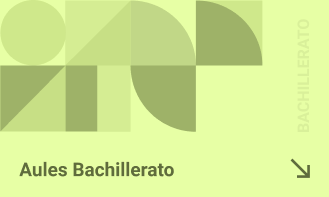
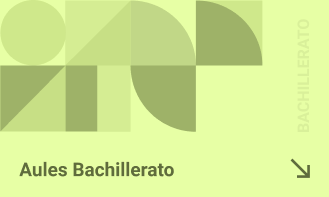
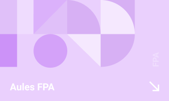
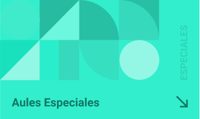
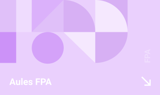
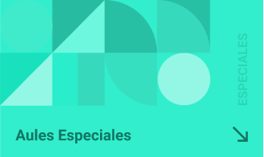
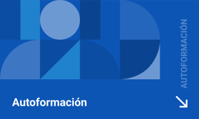
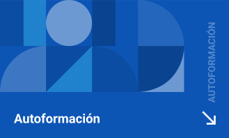
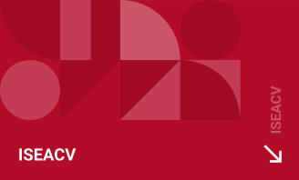
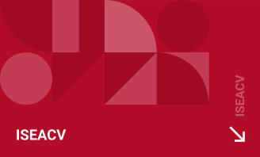

¿Que es Aules?
Aules es un lugar destinado al e-learning, con vocación de universalidad, sencillez y accesibilidad desde cualquier dispositivo.
Aules es un lugar destinado al e-learning, con vocación de universalidad, sencillez y accesibilidad desde cualquier dispositivo.
Mediante cualquiera de los "sabores" que os aparecen a continuación según la enseñanza. Si aún no sabes cómo acceder o tienes problemas con el nombre de usuario o la contraseña, lee más abajo.

 


 



 


 

El nombre de usuario es tu NIA. La contraseña inicial son las 3 primeras letras de tu apellido en minúscula, seguidas de tu fecha de nacimiento (dos cifras para el día, dos para el mes y dos para el año). Al acceder por primera vez, debes cambiar tu contraseña.
Si tienes problemas con la contraseña, haz clic en el enlace "¿Olvidó su nombre de usuario o contraseña?" que encontrarás en la página de acceso de tu sabor de Aules y sigue las instrucciones.
En caso de no recibir ningún correo de confirmación, contacta con el profesorado del curso.
En caso de recibir un correo indicando que "en este sitio no se pueden cambiar las contraseñas", prueba con el método 2.
Accede a Aules con tu DNI/NIE i la clave de Itaca.
Si no recuerdas tu contraseña, sigue este enlace:
https://acces.edu.gva.es/escriptoriDesde este enlace podrás reiniciar tu contraseña mediante uno de estos métodos: DNI/NIE, identidad digital, certificado digital o Cl@ve.
3. Otros/as usuarios/as - Si no recuerdas tu nombre de usuario o la contraseña, comunícalo mediante una incidencia a GVA-SAI:https://gvasai.edu.gva.es
Si necesitas más ayuda, puedes contactar con el Servicio de Soporte y Asistencia Informática (GVA-SAI) mediante este enlace o el teléfono 961207685.